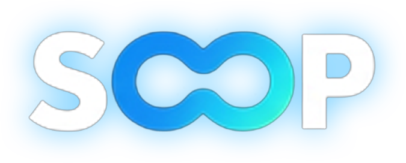
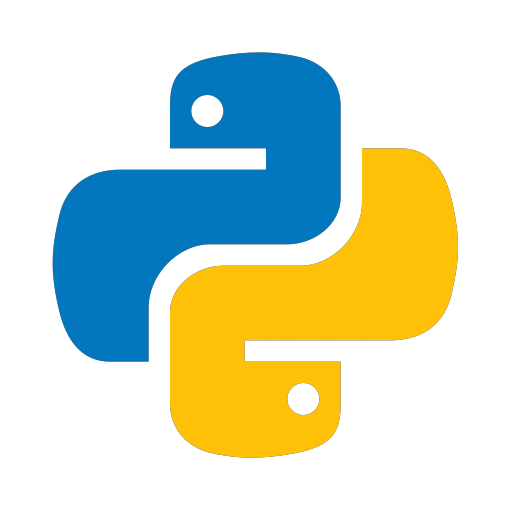
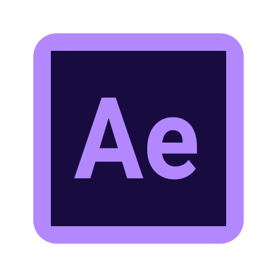

01
LIVE PRODUCTION
라이브 방송 프로덕션
안정적인 송출 환경과 시청 경험을 함께 설계합니다.
- 후원 시스템 및 전자녀 커스텀 세팅
- 시그니처 사운드와 이미지 오버레이 구성
- 생방송용 포스터·배너·로고 제작
- 대형 이벤트 실시간 모니터링 및 현장 대응
CAPABILITIES
방송과 콘텐츠 비즈니스에 필요한 여러 역할을 이해하고, 각 과정이 자연스럽게 이어지도록 직접 실행합니다.
ABOUT ME · FROM EDITOR TO DIRECTOR
영상 편집자로 미디어 커리어를 시작했습니다. 시청자의 트렌드와 밈을 읽고 채널을 성장시키는 과정에서, 크리에이터 비즈니스가 지속해서 성장하려면 좋은 영상 그 이상의 시스템이 필요하다는 것을 발견했습니다.
방송 환경, 후원 데이터, 팬 커뮤니티, 광고 계약과 제작 일정까지. 주어진 역할에 머무르지 않고 운영의 병목을 직접 찾아 해결하며 영역을 확장해 왔습니다.
“영상이 본질이라면, 시스템은 확장성입니다.”
MY VISION
기술(Tech), 데이터(Data), 비즈니스(Business)를 연결해 아티스트가 콘텐츠에 집중할 수 있는 환경을 만들고, 1인 미디어가 지속 가능한 비즈니스로 확장되는 과정을 함께합니다.
프로젝트로 확인하기 ↗LIVE PRODUCTION
안정적인 송출 환경과 시청 경험을 함께 설계합니다.
DATA OPERATIONS
한 건의 기록도 놓치지 않는 검증 가능한 운영 흐름을 만듭니다.
WEB & COMMUNITY
목적에 맞는 화면을 만들고 실제 운영까지 연결합니다.
CONTENT OPERATIONS
제작 품질과 업로드 속도, 채널 유입을 함께 관리합니다.
BUSINESS MANAGEMENT
좋은 콘텐츠가 실제 비즈니스 성과로 이어지도록 조율합니다.
TOOLS & ENVIRONMENT



